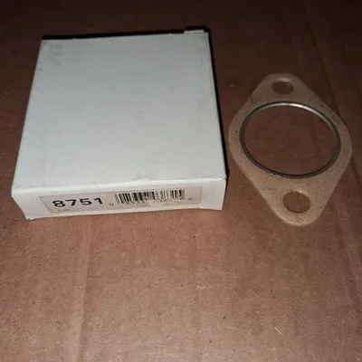
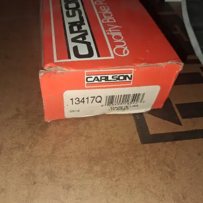
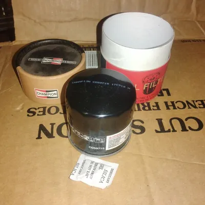
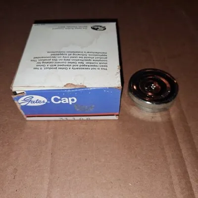
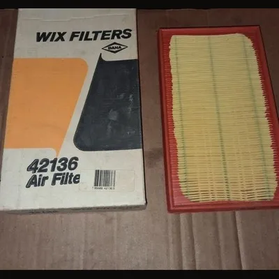

Distributor Rotors
1962-1995 Kem W282X Distributor Rotor Honda Civic Accord Subaru Gl Dl Honda
W282X
Fits 1973-1974 Subaru DL · 1972-1974 Subaru GL (312 listed)
$12.99
View details28 parts whose listing names at least one Subaru vehicle, mostly ignition & tune-up, oil filters and disc brake hardware kits. Fit depends on year, model and engine, so check the full vehicle list on each part page or message us before you buy.
28 parts
Online checkout through Square. Ships from Carbondale, PA, or pick up by confirmed appointment only. Fitment question? Message us.
W282X
Fits 1973-1974 Subaru DL · 1972-1974 Subaru GL (312 listed)
$12.99
View details
W3034
Fits 1972-1974 Subaru GL · 1973-1974 Subaru 1400 (230 listed)
$12.99
View details
W292X
Fits 1978-1987 Subaru Brat · 1985-1986 Subaru XT (453 listed)
$13.99
View details
W396X
Fits 1977-1987 Subaru Standard · 1986-1987 Subaru GL (161 listed)
$14.99
View details
W2012X
Fits 1987-1991 Subaru Justy · 1986-1989 Mazda 323 (47 listed)
$19.99
View details
31728AA050
Fits 2003-2006 Subaru Baja · 1999-2004 Subaru Forester (82 listed)
$14.99
View details
8751
Fits 1987-1994 Subaru Justy (18 listed)
$9.99
View details
13329
Fits 1998-2002 Subaru Forester · 1997-2003 Subaru Impreza (222 listed)
$10.99
View details
13417Q
Fits 2002-2010 Subaru Impreza · 2003-2012 Subaru Legacy (330 listed)
$33.99
View details
13484Q
Fits 2005-2019 Subaru Legacy · 2010-2019 Subaru Outback (491 listed)
$17.00
View details
H2108
Fits 1978-1980 Subaru Brat · 1977-1979 Subaru DL (3000 listed)
$11.99
View details
COS9715
Fits 2005-2010 Subaru Forester · 2008-2012 Subaru Impreza (88 listed)
$11.99
View details
31108
Fits 1978-1987 Subaru Brat · 1973-1989 Subaru DL (294 listed)
$9.99
View details
33478
Fits 1978-1987 Subaru Brat · 1973-1989 Subaru DL (1479 listed)
$9.99
View details
CV4444
Fits Subaru GL · Subaru Loyale (81 listed)
$24.99
View details
A3621
Fits 1980-1987 Subaru Brat · 1980-1989 Subaru GL (113 listed)
$19.99
View details
69012
Fits 2011-2018 Subaru Forester · 2008-2011 Subaru Impreza (147 listed)
$19.99
View details
JH-72
Fits 1978-1987 Subaru Brat · 1989-1990 Chevrolet Tracker (155 listed)
$14.99
View details
JH152
Fits 1984 Subaru Brat · 1984-1986 Subaru GL (85 listed)
$16.99
View details
JR-75
Fits 1980-1987 Subaru Brat · 1985-1987 Subaru DL (495 listed)
$9.99
View details
JR122T
Fits 1987-1991 Subaru Justy · 1986-1989 Mazda 323 (50 listed)
$17.57
View details
JR101
Fits 1990-1994 Subaru Justy · 1986-1988 Chevrolet Spectrum (429 listed)
$9.99
View details
JR72
Fits 1973-1974 Subaru 1400 · 1978-1987 Subaru Brat (693 listed)
$9.99
View details
S6607
Fits 2005-2010 Subaru Forester · 2008-2012 Subaru Impreza (76 listed)
$10.99
View details
33471
Fits 1990-1994 Subaru Loyale · 1983-1984 Subaru Brat (107 listed)
$16.99
View details
42136
Fits 1983-1984 Subaru Brat · 1987-1989 Subaru DL (219 listed)
$22.50
View details
51334ST
Fits 2006 Subaru B9 Tribeca · 1998-1999 Subaru Forester (149 listed)
$10.99
View details
51361
Fits 1988-1989 Subaru DL · 1988-1989 Subaru GL (49 listed)
$15.99
View details